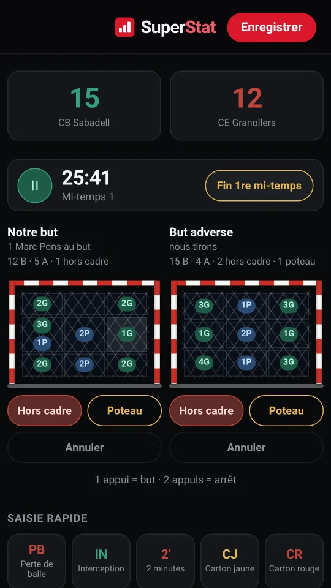
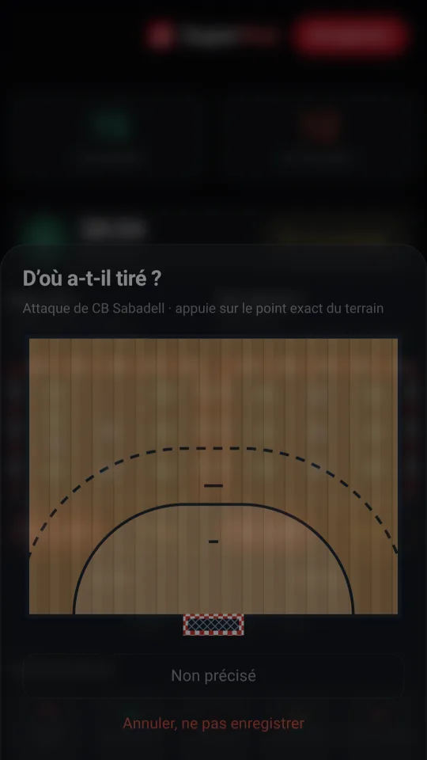
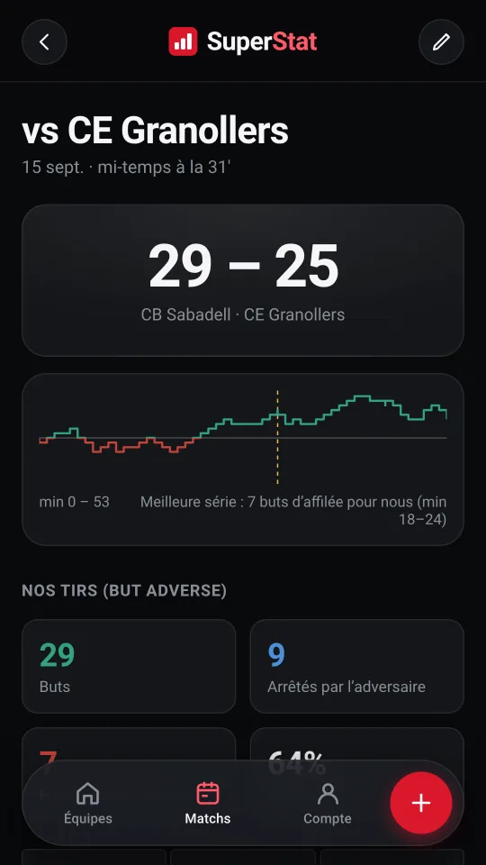
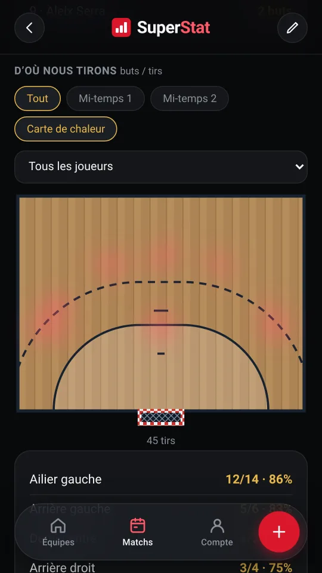
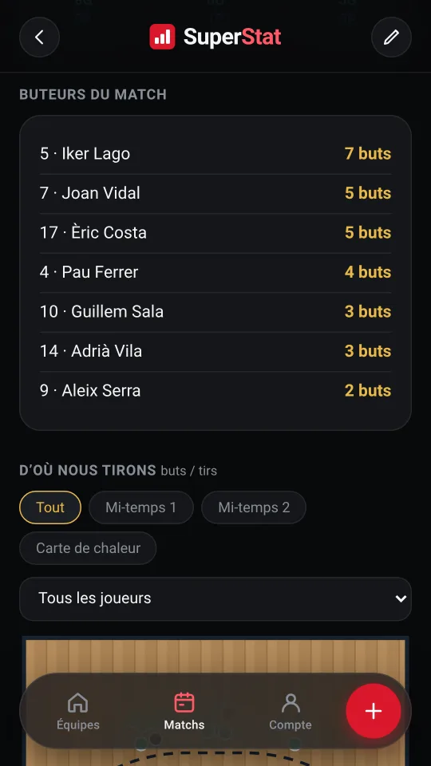
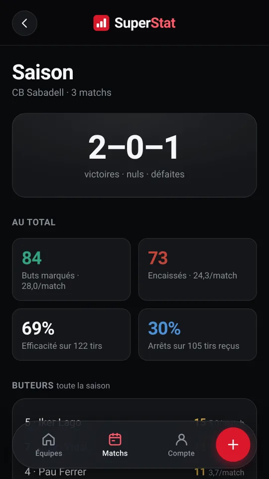
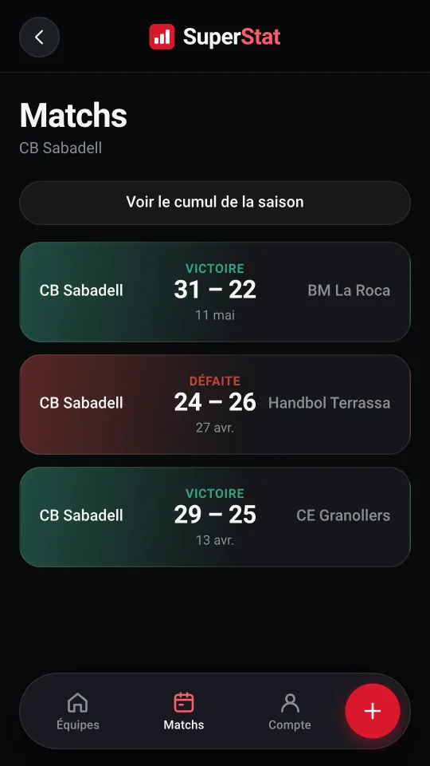
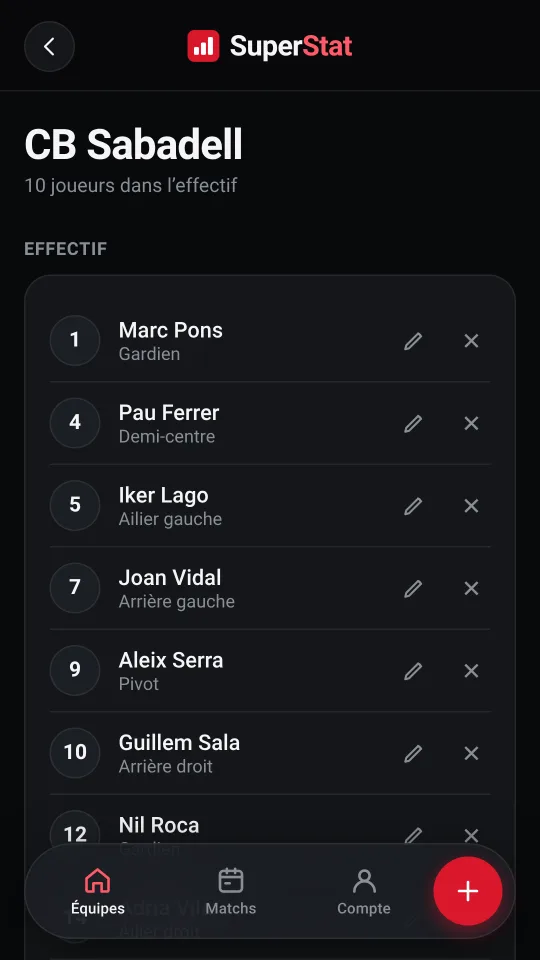

Les deux buts
Le vôtre et celui de l'adversaire, découpés en neuf zones. Un appui sur une zone est un but, deux appuis un arrêt, et des boutons à part pour le hors cadre et le poteau.
Vous notez le match pendant qu'il se joue, le téléphone à la main, et au coup de sifflet final la feuille est déjà faite.

Tout ce qui se passe sur le terrain tient sur un écran, pour ne pas quitter le jeu des yeux pendant que vous notez.
Le vôtre et celui de l'adversaire, découpés en neuf zones. Un appui sur une zone est un but, deux appuis un arrêt, et des boutons à part pour le hors cadre et le poteau.
Marquez d'un doigt l'endroit exact d'où part le tir, sur un demi-terrain dessiné à l'échelle. Si vous préférez aller plus vite, désactivez-le.
Avec pause, et un bouton pour décider vous-même quand finit la première mi-temps. Chaque saisie garde sa minute et sa période, sans supposer qu'une mi-temps dure trente minutes.
Demandé une seule fois puis conservé, pour que les buts encaissés aient eux aussi un propriétaire et que le pourcentage d'arrêts veuille dire quelque chose.
Saisie rapide des pertes de balle, des interceptions, des 2 minutes et des cartons, avec les deux mêmes appuis.
Chaque changement est noté, et c'est de là que sort le plus/minus de chaque joueur : ce que fait le score pendant qu'il est sur le terrain.
Au cas où le doigt glisse. La dernière saisie s'enlève, et voilà.
La feuille sort de ce que vous avez noté. Il n'y a rien à rédiger après coup.
Avec la répartition des buts par zone de la cage.
La physionomie du match, avec la meilleure série mise en avant.
Qui a marqué, qui a arrêté, et ce que faisait le score avec chaque joueur sur le terrain.
Sur le terrain, filtrée par joueur et par période, avec carte de chaleur.
La zone de tir croisée avec la zone de la cage : le chiffre qui sert vraiment à préparer un gardien.
Le match en CSV, ou partagé en image depuis le téléphone.
Les huit écrans que vous utiliserez le plus, tirés d'un vrai match noté avec l'app.







Chaque match enregistré s'additionne. L'équipe a son propre cumul, sans ouvrir une saison de matchs un par un.
Plusieurs équipes, chacune avec son effectif, et les mêmes données sur le téléphone et sur l'ordinateur.
Commencez gratuitement, et restez-y. La formule payante ne déverrouille aucune statistique : vous les avez toutes dès le premier match. Elle ne lève que les deux plafonds.
0 € pour toujours
Sans carte et sans date de fin.
3,49 € par mois
Hors taxes. Annulez quand vous voulez.
| Ce que vous avez | Gratuite | Pro |
|---|---|---|
| Équipes | 1 | Sans limite |
| Matchs enregistrés | 5 | Sans limite |
| Saisie en direct : tirs, événements et chrono | ||
| Le point de tir sur le terrain | ||
| Carte des tirs et carte de chaleur | ||
| Statistiques de la saison | ||
| Plus/minus par joueur | ||
| Export CSV et partage | ||
| Fonctionne sans réseau | ||
| Synchronisation entre vos appareils | ||
| Quatre langues | ||
| Sans publicité ni suivi | ||
| Fait vivre le projet | — |
Le paiement est géré par Stripe. SuperStat n’enregistre pas les données de votre carte.
L'app n'en a donc pas besoin. Elle s'ouvre et vous notez le match quand même, et ce qui reste en attente se téléverse tout seul au retour du réseau.
Si le téléphone ferme l'app en plein match, elle propose de reprendre là où vous vous étiez arrêté.
Un compte, avec Google ou avec une adresse e-mail et un mot de passe, et les mêmes données sur le téléphone et sur l'ordinateur.
Sans publicité, sans analytique et sans suivi : chaque compte ne voit que le sien. Vous pouvez exporter n'importe quel match, ou supprimer ce que vous voulez quand vous voulez.
Elle s'ouvre dans le navigateur, il n'y a rien à installer, et c'est gratuit.